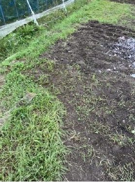

学校の先生向け 3分コース
判断に必要なことだけを、3つにまとめました。
① 1分
どんな場所か
三原市西部の約96㎡の畑。小麦を育ててパンを焼くまでを、3段構えで探究します。
計算する→可視化する→自分の条件で判断する
② 1分
安全と記録
生徒が「いつ・何時間・何をして・何を身につけたか」を、ルーブリック・活動ログ・実施報告書の3点で残し、学校にお渡しします。
受け入れ準備の状況は、未整備の項目も含めて下に公開しています。
③ 1分
次の一歩
いまは畑の土台づくりの段階で、受け入れ実績はまだありません。有償の試行は2028〜2029年を目安にしています（下の「10年の歩み方」のフェーズ1）。
それまでの間も、ご意見や情報交換は歓迎です。
10年の歩み方（2026〜2036）
各フェーズの終わりに「判断ゲート」を置き、数字で「進む／縮める」を決めます。いまはフェーズ0です。
| フェーズ | 期間 | 主な仕事 | 次へ進む条件 |
|---|---|---|---|
| 0 実証・記録 | 2026〜2027 | 小麦・車椅子通路・自助具の3D印刷。まだ売らず、記録を積み上げる | 記録が12か月途切れず続いたか |
| 1 型化・試行 | 2028〜2029 | 1コマプログラムの有償トライアル、開業届 | 有償契約2校以上、継続意向あり |
| 2 柱を絞る | 2030〜2032 | 探究フィールド提供と、防災・自給の暮らしの相談。パンは店舗にせず体験教材に | 体力・時間に余裕があり、収支が赤字でないか |
| 3 継承・公開 | 2033〜2036 | 教材のオープン化、後継の指導者育成 | 自分抜きで1年回せるか |
記録の連続月数などは、ダッシュボードの「🧭 10年戦略」で毎回自動で計算しています。
想定している連携先
いずれも現時点では構想です。
| 通信制高校・サポート校 | 「総合的な探究の時間」の外部フィールド |
|---|---|
| 総合型選抜・推薦入試 | 自分で立てた問いを畑で確かめ、探究の過程を記録する場 |
| 特別支援学校 | 手順が見える作業を通じた職場体験（現場実習）の場 |
受け入れ準備の状況
整った項目から順に更新します（2026年10月時点）。
| 項目 | 現状 | 今後の予定 |
|---|---|---|
| 車椅子が通れる通路 | 整備中 | 2026年10月4日着工。ハウスの周囲を一周できる幅で整備 |
| 試行プログラム | 実施 0 回 | 2027年度に無償で1〜2回、少人数で試す → 2028年から有償の試行 |
| 保険 | 未加入 | 試行までに、受け入れに合った保険に加入 |
| 緊急時の対応 | 準備中 | 連絡体制・最寄りの医療機関・応急手当の手順を文書化 |
| トイレ・休憩場所 | 確認中 | 使える場所と、車椅子での利用可否を確認して記載 |

指導者の資格・経験
| 高等学校教諭一種免許状（理科） | 保有 |
| 職業訓練指導員（パン・菓子製造） | 保有 |
| 危険物取扱者（乙種第4類） | 保有 |
| 産業用ロボット特別教育 修了（インストラクターコースは2026年12月修了予定） | 保有 |
| 高等学校教諭免許状（情報） | 2027年9月取得予定 |
| 特別支援学校 高等部の作業学習（農業・食品加工など）実習助手 | 5年4か月 |
ダッシュボードでは、播種シミュレーター・AI土壌診断・3Dプリンターの記録・情報Ⅰの例題などを公開しています。